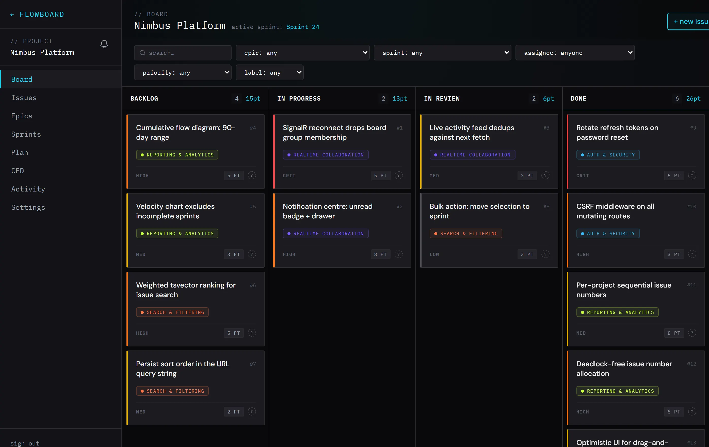
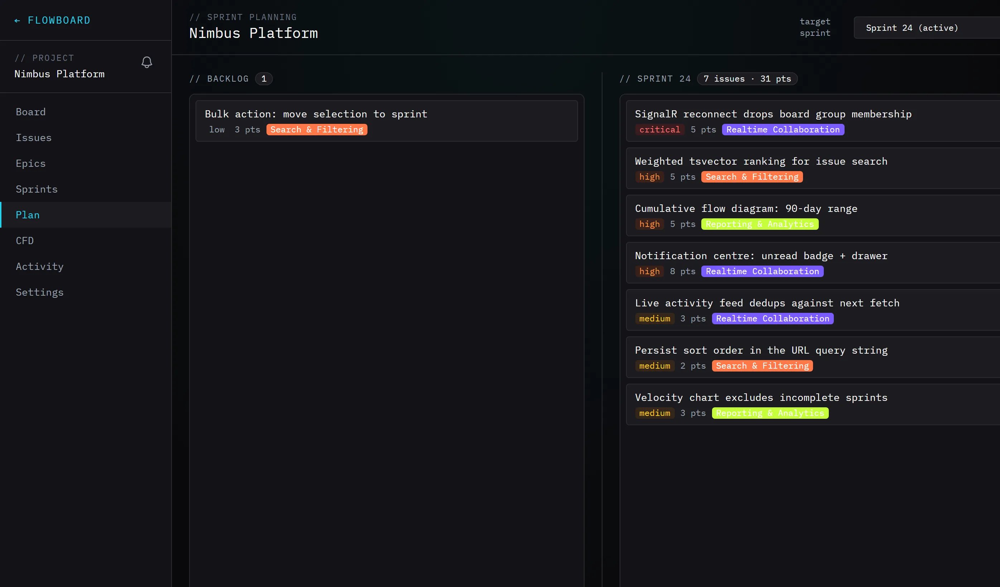
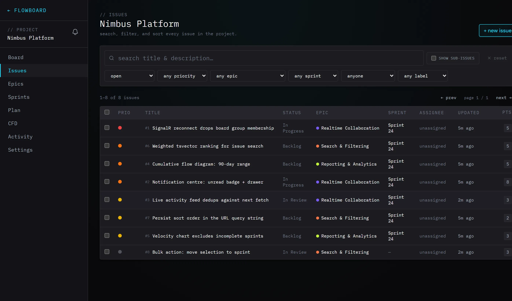
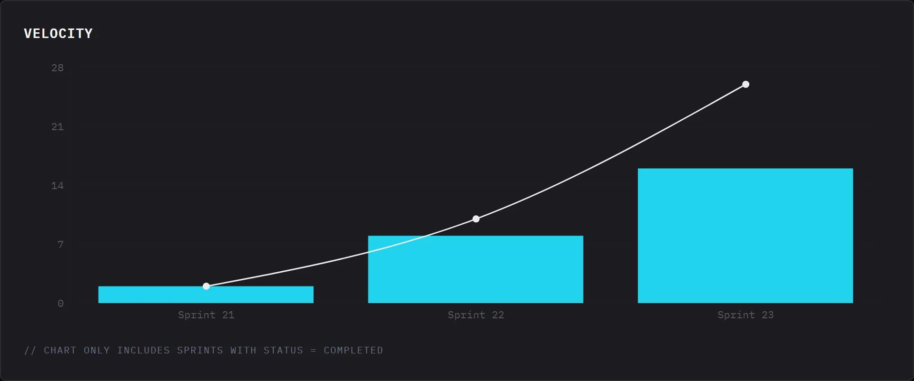
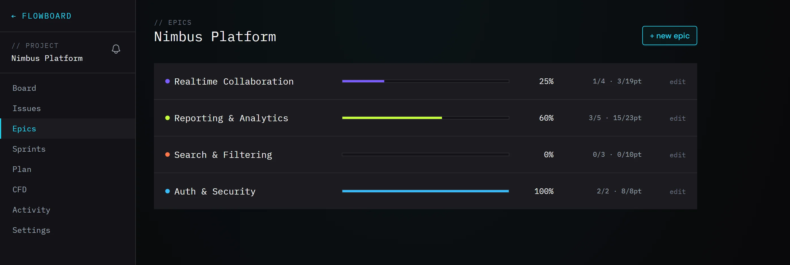

A developer-native alternative to Jira. Kanban boards with drag-and-drop, epics, sprint planning, velocity and burndown charts, and a cumulative flow diagram. The API is ASP.NET Core 10 written against raw SQL, deliberately with no ORM, so the queries are the part worth reading.
Columns, story points and epic pills, all drag-and-drop with optimistic UI. Every issue carries a per-project number that starts at #1 for each project, so the ids stay short and human. When a card moves, connected clients update over SignalR instead of waiting for a refresh.



My day job is .NET, C# and SQL, and none of that work is public. A toy CRUD app would not have shown much, so I built the tool I would have to live with: FlowBoard runs on my own machine and holds its own backlog. Every feature on it exists because I hit the gap while using it.
That constraint kept the scope honest. Bulk actions exist because triaging a dozen issues one at a time was tedious. The notification centre exists because I kept missing replies. The cumulative flow diagram exists because I wanted to see where work was piling up, and a bar chart would not have told me.
There is no Entity Framework here, and that is the point. Every query is hand-written SQL executed through Dapper and Npgsql, so the interesting work stays visible instead of disappearing behind an expression tree.
ASP.NET Core 10 Web API. Dapper and Npgsql over Postgres, no ORM. JWT auth with 15 minute access tokens and rotating 30 day refresh tokens, BCrypt hashing, and CSRF middleware on every mutating route.
React 18 and TypeScript on Vite, Tailwind, TanStack Query for server state, zustand for local state, @dnd-kit for drag-and-drop, and Recharts for the reporting views.
A SignalR hub with per-project groups. Every audited mutation publishes a typed event that the client turns into a targeted TanStack Query invalidation, so the board updates without refetching the world.
Velocity needs two numbers per sprint: what closed inside that sprint, and the cumulative total across every sprint before it. An aggregate nested inside a window function gets both without a self-join or a second round trip.
SELECT
s.name,
COALESCE(SUM(i.story_points), 0) AS points_completed,
SUM(COALESCE(SUM(i.story_points), 0))
OVER (ORDER BY s.start_date ROWS UNBOUNDED PRECEDING) AS cumulative_points
FROM sprints s
LEFT JOIN issues i
ON i.sprint_id = s.id
AND i.closed_at IS NOT NULL
AND i.closed_at <= s.end_date + INTERVAL '1 day'
WHERE s.project_id = @ProjectId
AND s.status = 'completed'
GROUP BY s.id, s.name, s.start_date
ORDER BY s.start_date;The closed_at <= end_date guard is the part that matters. Without it, closing an old ticket today would retroactively inflate a sprint that shipped last month.
A few other pieces of SQL worth calling out:
ILIKE, because stemming a two-letter fragment returns noise.#N sequence. A BEFORE INSERT trigger bumps a single counter row with INSERT … ON CONFLICT … RETURNING, so concurrent inserts serialise on one row instead of racing each other.ORDER BY never reaches the database.The velocity chart counts completed sprints only, and counts a story point on the day it closed rather than the day you look at it. Epics roll their progress up from their issues, so a 60% bar means sixty percent of the points, not sixty percent of the tickets.


The repo includes the full schema, a documented walk-through of the trickier queries, and the xUnit and Playwright suites.
Open FlowBoard on GitHub